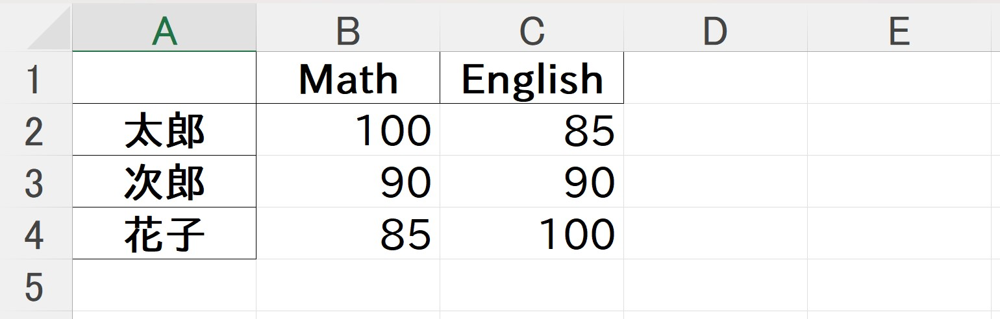

4. Pandasの基本#
Pandas (panel-data-sの略)は、Python向けのデータ分析ライブラリで、主にスプレッドシート状のデータを扱うことができる。Pandasでは以下に説明するDataFrameを使って、データの操作やファイル入出力、グラフの作成等を行うことができる。
"""
下準備のコード
"""
import matplotlib
import seaborn as sns
# グラフの設定
matplotlib.rcParams["figure.dpi"] = 150
sns.set(style="white", palette="colorblind")
color_palette = sns.color_palette("colorblind")
4.1. DataFrameの操作#
Pandasの中核をなすデータ構造にDataFrameがある。DataFrameとは、スプレッドシート状のデータを扱うデータ構造で、Excelのように数値を縦横に配置したデータを作ることができる。

(Pandasのチュートリアルより引用)
例えば、テストの点数を集計したようなデータを考えてみる。以下、三人の学生について、数学と英語の点数を集計した物である (性別と点数の間には特別な意味はない)。
import numpy as np
import pandas as pd
import matplotlib.pyplot as plt
df = pd.DataFrame(
{
"Name": ["Taro", "Jiro", "Hanako"],
"Math": [100, 90, 85],
"English": [85, 90, 100],
}
)
print(df)
Name Math English
0 Taro 100 85
1 Jiro 90 90
2 Hanako 85 100
上記の通り、printでDataFrameを出力すると、表のように整理された文字列が出力される。また、Jupyter環境であれば、単にdfと書くか、IPythonモジュールのdisplayを用いることでHTMLにより整形された表を出力することができる。
# 単にdfと書く
df
| Name | Math | English | |
|---|---|---|---|
| 0 | Taro | 100 | 85 |
| 1 | Jiro | 90 | 90 |
| 2 | Hanako | 85 | 100 |
# displayの使用
from IPython.display import display
display(df)
| Name | Math | English | |
|---|---|---|---|
| 0 | Taro | 100 | 85 |
| 1 | Jiro | 90 | 90 |
| 2 | Hanako | 85 | 100 |
なお、DataFrameにおいては、各行にデフォルトで数字のインデックスが振られるが、これ自体は必要なく、例えばNameの列で各行を代表させれ十分であることも多い。このような場合には、DataFrameに対してindexを指定して初期化する。
df_label = pd.DataFrame(
{
"Math": [100, 90, 85],
"English": [85, 90, 100],
},
index=["Taro", "Jiro", "Hanako"],
)
| Math | English | |
|---|---|---|
| Taro | 100 | 85 |
| Jiro | 90 | 90 |
| Hanako | 85 | 100 |
注釈
indexを指定しない場合は、indexに当たる0, 1, 2, ...がラベルであると見なされる。特に行お操作を行うときに、ラベルがインデックスなのか、その他の文字列等なのかを意識しておくことが大事になる。
4.1.1. 行と列の取り出し#
Pandasでは行と列の意味合いが微妙に異なっており、それぞれを取り扱う場合に異なる操作が必要となる。
列の取り出し
DataFrameの各列はSeriesという型で表わされていて、dfに各列のラベルを与えることで取り出すことができる。
col = df["Math"]
print('type is "{:s}"'.format(type(col).__name__))
type is "Series"
col
0 100
1 90
2 85
Name: Math, dtype: int64
また、複数のラベルを指定して、以下のように複数列を一度に取り出すこともできる。
cols = df[["Math", "English"]]
cols
| Math | English | |
|---|---|---|
| 0 | 100 | 85 |
| 1 | 90 | 90 |
| 2 | 85 | 100 |
行の取り出し
一方で、行を取り出す場合にはlocあるいはilocを用いる。locは各行にラベルがついている場合に使用し、ilocは単純に行のインデックスを指定して使用する。
df.iloc[0]
Name Taro
Math 100
English 85
Name: 0, dtype: object
df_label.loc["Taro"]
Math 100
English 85
Name: Taro, dtype: int64
4.1.2. 行と列の追加#
列の追加
列を追加する方法はいくつかあるが、行と列でできるだけ似た操作を使うのならDataFrameを辞書型のように扱って、データ列を代入する方法とconcatを使う方法の2つがある。この2つなら辞書型として扱う方法の方が簡単で、行ラベルがインデックスなのか文字列等七日によって区別する必要がない。
| Name | Math | English | Physics | |
|---|---|---|---|---|
| 0 | Taro | 100 | 85 | 75 |
| 1 | Jiro | 90 | 90 | 85 |
| 2 | Hanako | 85 | 100 | 80 |
# concatを用いる方法 (行ラベルがインデックス)
new_col = pd.Series({0: 75, 1: 85, 2: 80}, name="Physics")
pd.concat([df, new_col], axis=1)
| Name | Math | English | Physics | |
|---|---|---|---|---|
| 0 | Taro | 100 | 85 | 75 |
| 1 | Jiro | 90 | 90 | 85 |
| 2 | Hanako | 85 | 100 | 80 |
concatを用いる場合、パラメータにaxis=1を指定する (初期値はaxis=0 (行)に対応するので、明示的にaxis=1 (列)を指定する)。
# concatを用いる方法 (行ラベルが文字列)
new_col = pd.Series({"Taro": 75, "Jiro": 85, "Hanako": 80}, name="Physics")
pd.concat([df_label, new_col], axis=1)
| Math | English | Physics | |
|---|---|---|---|
| Taro | 100 | 85 | 75 |
| Jiro | 90 | 90 | 85 |
| Hanako | 85 | 100 | 80 |
行の追加
行を追加する場合も、上記の列の追加と同様にdf.locを辞書型と考えてデータ列を代入する方法 (こちらの方がシンプル)と、concatを用いてデータ行を結合する方法の2つがある。
行の場合は、行ラベルがインデックスなのか、文字列等なのかによって、書き方が異なる。特に、行を取り出す場合と異なり、ilocを用いるて行を追加することはできないので注意すること。
# locを用いる場合 (ラベルがインデックス)
df_copy = df.copy()
df_copy.loc[3] = ["Kikue", 100, 100]
df_copy
| Name | Math | English | |
|---|---|---|---|
| 0 | Taro | 100 | 85 |
| 1 | Jiro | 90 | 90 |
| 2 | Hanako | 85 | 100 |
| 3 | Kikue | 100 | 100 |
# locを用いる (ラベルが文字列他)
df_copy = df_label.copy()
df_copy.loc["Kikue"] = [100, 100]
df_copy
| Math | English | |
|---|---|---|
| Taro | 100 | 85 |
| Jiro | 90 | 90 |
| Hanako | 85 | 100 |
| Kikue | 100 | 100 |
concatを使って「行」を追加する場合には、一度、行を含むDataFrameを作成して、それをconcatで結合する必要がある。一行分のデータであれば、
# concatを用いる (ラベルがインデックス)
new_row = pd.Series({"Name": "Kikue", "Math": 100, "English": 100}, name=3)
pd.concat([df, pd.DataFrame(new_row).T], axis=0)
| Name | Math | English | |
|---|---|---|---|
| 0 | Taro | 100 | 85 |
| 1 | Jiro | 90 | 90 |
| 2 | Hanako | 85 | 100 |
| 3 | Kikue | 100 | 100 |
# concatを用いる (ラベルが文字列)
new_row = pd.Series({"Math": 100, "English": 100}, name="Kikue")
pd.concat([df_label, pd.DataFrame(new_row).T], axis=0)
| Math | English | |
|---|---|---|
| Taro | 100 | 85 |
| Jiro | 90 | 90 |
| Hanako | 85 | 100 |
| Kikue | 100 | 100 |
4.1.3. 行と列の削除#
行や列の削除には共通でdropを用いる。この関数の引数にはindex=...(行ラベルを指定)とcolumns=...(列ラベルを指定)という引数があり、これらを用いて削除すべき行や列を指定する。なお、dropはDataFrame自体を更新しないので、もしDataFrame自体を更新したい場合には引数にinplace=Trueを与える。
df_copy = df_label.copy()
df_copy.drop(index=["Jiro"])
| Math | English | |
|---|---|---|
| Taro | 100 | 85 |
| Hanako | 85 | 100 |
df_copy = df_label.copy()
df_copy.drop(columns=["Math"])
| English | |
|---|---|
| Taro | 85 |
| Jiro | 90 |
| Hanako | 100 |
また、labels=...とaxis=...を指定することで、行(axis=0)と列(axis=1)の何番目かを指定して削除することもできる。
df_copy = df_label.copy()
df_copy.drop(labels=["Taro"], axis=0) # 行を削除
| Math | English | |
|---|---|---|
| Jiro | 90 | 90 |
| Hanako | 85 | 100 |
df_copy = df_label.copy()
df_copy.drop(labels=["Math"], axis=1) # 列を削除
| English | |
|---|---|
| Taro | 85 |
| Jiro | 90 |
| Hanako | 100 |
4.1.4. 要素へのアクセス#
要素へのアクセスには、これまでにも登場したlocやilocを用いる。これらに行、列のラベルやインデックスを指定することで要素へのアクセスができる。
# ラベルを用いてアクセスする場合
print(df_label.loc["Taro", "English"])
85
# インデックスを用いてアクセスする場合 (0行: Taro, 1列: English)
print(df_label.iloc[0, 1])
85
また、要素のアクセス時は、通常の配列と同様に範囲を:を用いて指定することもできる。
# ラベルを用いて範囲指定
print(df_label.loc["Taro":"Hanako", "Math"])
Taro 100
Jiro 90
Hanako 85
Name: Math, dtype: int64
# インデックスを用いて範囲指定
print(df_label.iloc[0:3, 0])
Taro 100
Jiro 90
Hanako 85
Name: Math, dtype: int64
また、NumPyなどと同様に、取り出したいインデックスやラベルを配列としても指定できる。
# ラベルを用いて指定
print(df_label.loc[["Taro", "Jiro"], "Math"])
Taro 100
Jiro 90
Name: Math, dtype: int64
# インデックスを用いて指定
print(df_label.iloc[0:2, 0])
Taro 100
Jiro 90
Name: Math, dtype: int64
当然ながら、これらのアクセス方法を用いれば、DataFrameの値を書き換えることもできる。
df_copy = df_label.copy()
df_copy.loc["Taro", :] = 100 # Taroの全科目を100点に修正
df_copy
| Math | English | |
|---|---|---|
| Taro | 100 | 100 |
| Jiro | 90 | 90 |
| Hanako | 85 | 100 |
4.2. 数値計算#
Pandasでは、DataFrameの各行や各列、データ全体に対して統計量を簡単に取ることができる。統計量には平均(mean)や標準偏差(std)などが用意されており、以下のように計算できる。
# Taroの平均点を計算
print("Taro's avg: {:.3f}".format(df_label.loc["Taro"].mean()))
# Englishの平均点を計算
print("English avg: {:.3f}".format(df_label["English"].mean()))
Taro's avg: 92.500
English avg: 91.667
これらを使うと、偏差値なども簡単に計算できる。
# 数学の偏差値を計算
math_dev = 50.0 + (df["Math"] - df["Math"].mean()) / df["Math"].std() * 10.0
math_dev.name = "Math dev."
print(math_dev)
0 60.910895
1 47.817821
2 41.271284
Name: Math dev., dtype: float64
# 英語の偏差値を計算
eng_dev = 50.0 + (df["English"] - df["English"].mean()) / df["English"].std() * 10.0
eng_dev.name = "Eng. dev."
print(eng_dev)
0 41.271284
1 47.817821
2 60.910895
Name: Eng. dev., dtype: float64
このようにして計算した結果を表に挿入することで、より多くの情報を含んだDataFrameを作り上げていくことができる。
df_copy = df_label.copy()
df_copy.loc[:, math_dev.name] = math_dev.values
df_copy.loc[:, eng_dev.name] = eng_dev.values
df_copy
| Math | English | Math dev. | Eng. dev. | |
|---|---|---|---|---|
| Taro | 100 | 85 | 60.910895 | 41.271284 |
| Jiro | 90 | 90 | 47.817821 | 47.817821 |
| Hanako | 85 | 100 | 41.271284 | 60.910895 |
行や列の順序を入れ替えたい場合にはlocやilocに入れ替え後のラベルやインデックスの配列を指定すれば良い。
df_copy = df_copy.loc[:, ["Math", "Math dev.", "English", "Eng. dev."]]
df_copy
| Math | Math dev. | English | Eng. dev. | |
|---|---|---|---|---|
| Taro | 100 | 60.910895 | 85 | 41.271284 |
| Jiro | 90 | 47.817821 | 90 | 47.817821 |
| Hanako | 85 | 41.271284 | 100 | 60.910895 |
最後にMathとEnglishのそれぞれについて平均点を追加してみる。
math_avg = df["Math"].mean()
eng_avg = df["Math"].mean()
df_copy.loc["Avg"] = [math_avg, "N/A", eng_avg, "N/A"]
df_copy
| Math | Math dev. | English | Eng. dev. | |
|---|---|---|---|---|
| Taro | 100.000000 | 60.910895 | 85.000000 | 41.271284 |
| Jiro | 90.000000 | 47.817821 | 90.000000 | 47.817821 |
| Hanako | 85.000000 | 41.271284 | 100.000000 | 60.910895 |
| Avg | 91.666667 | N/A | 91.666667 | N/A |
4.3. データの入出力#
次に、先ほど作成したDataFrameをファイルに出力してみよう。出力できるファイル形式は様々だが、CSVとExcel形式のファイルをここでは試してみる。
ファイルへの出力
CSVを出力する場合にはDataFrameのto_csvを用いれば良く、第1引数に出力先のファイル名を指定する。加えて日本語を出力する場合にはencoding="utf_8_sig"あるいはencoding="shift_jis"を指定しておく。
# 最初の列の表記を変更
df_copy = df_label.rename(index={"Taro": "太郎", "Jiro": "次郎", "Hanako": "花子"})
df_copy
| Math | English | |
|---|---|---|
| 太郎 | 100 | 85 |
| 次郎 | 90 | 90 |
| 花子 | 85 | 100 |
# CSVに出力
df_copy.to_csv("pandas.csv", encoding="utf_8_sig")
Excelファイルを出力する場合は、to_excelに対して、出力ファイル名を含むいくつかの引数を指定する。Excelの場合は、エンコーディングを指定する必要はない (指定できない)。なお、Excelファイルの操作を行う場合には、Pandas以外にopenpyxlをインストールしておく必要がある。
# Excelファイルに出力
df_copy.to_excel("pandas.xlsx")
正しく出力されると、Excel上で以下のように表の内容が確認できる。
{kind=link}
ファイルの読み取り
ファイルからの読み取りにはread_csvやread_exelといった関数を代わりに用いる。
df_csv = pd.read_csv("pandas.csv")
df_csv
| Unnamed: 0 | Math | English | |
|---|---|---|---|
| 0 | 太郎 | 100 | 85 |
| 1 | 次郎 | 90 | 90 |
| 2 | 花子 | 85 | 100 |
df_excel = pd.read_excel("pandas.xlsx")
df_excel
| Unnamed: 0 | Math | English | |
|---|---|---|---|
| 0 | 太郎 | 100 | 85 |
| 1 | 次郎 | 90 | 90 |
| 2 | 花子 | 85 | 100 |
ただし、上記の例ではファイル保存時にindexが文字列となっているファイルを保存しているため、そのまま読み込むと、自動的にindexが数字となっている列が追加されてしまう。これを防ぐためにはindexに相当する列が何列目なのかをindex_col=...で指定すれば良い。
df_csv = pd.read_csv("pandas.csv", index_col=0)
df_csv
| Math | English | |
|---|---|---|
| 太郎 | 100 | 85 |
| 次郎 | 90 | 90 |
| 花子 | 85 | 100 |
df_excel = pd.read_excel("pandas.xlsx", index_col=0)
df_excel
| Math | English | |
|---|---|---|
| 太郎 | 100 | 85 |
| 次郎 | 90 | 90 |
| 花子 | 85 | 100 |
4.4. グラフの作成#
DataFrameはplotというメンバを持ち、さらにplotに対してグラフの種類に対応するメソッドを呼び出すことで簡単にグラフを作成することができる。以下は棒グラフと散布図を作る例である。また、同様の出力はplotをメソッドとして呼び出してkindパラメータにグラフの種類を指定することでも実現できる。
# 再度DataFrameを作成
df = pd.DataFrame(
{
"Name": ["Taro", "Jiro", "Hanako"],
"Math": [100, 90, 85],
"English": [85, 90, 100],
}
)
# 棒グラフの作成
df.plot.bar(x="Name", y=["Math", "English"])
plt.show()
# plot(..., kind=...)を使う場合
df.plot(x="Name", y=["Math", "English"], kind="bar")
plt.show()
なお、グラフの見た目を調整したい場合には、plt.title等のメソッドを順次呼び出せば良い。
df.plot.bar(x="Name", y=["Math", "English"])
plt.title("Exam scores")
plt.xlabel("Student")
plt.ylabel("Score")
plt.ylim([0, 120])
plt.legend(loc="upper right")
plt.show()
また、複数のグラフを並べたい場合にはplotのaxパラメータに対してMatplotlibのSubplotAxisを指定すれば良い。
fig = plt.figure(figsize=(8, 4))
ax = fig.add_subplot(121)
df.plot(ax=ax, x="Name", y="Math", kind="bar", legend=None, color=color_palette[0])
ax.set_title("Math")
ax = fig.add_subplot(122)
df.plot(ax=ax, x="Name", y="English", kind="bar", legend=None, color=color_palette[1])
ax.set_title("English")
plt.tight_layout()
plt.show()